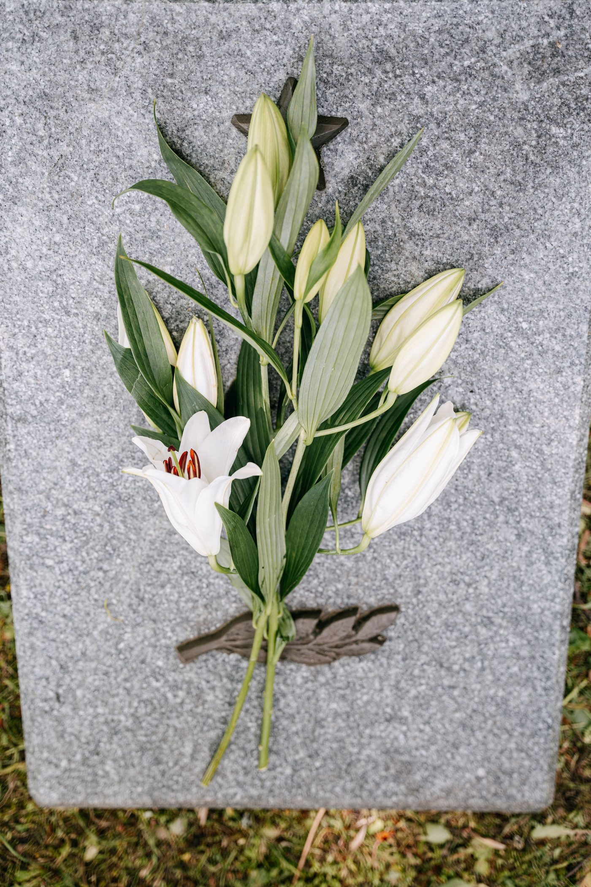

Levine Memorial Chapel sits at 649 Washington Ave in Albany. Founded in 1952 and family-owned by Mark W. Levine, the chapel offers funeral and memorial services, cremation, Jewish burial customs, and pre-planning.

649 Washington Ave, Albany, NY 12206
Reachable 24 hours a day at (518) 438-1002, as stated on the business site